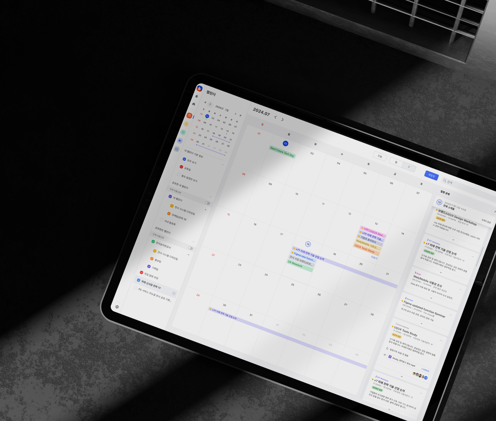
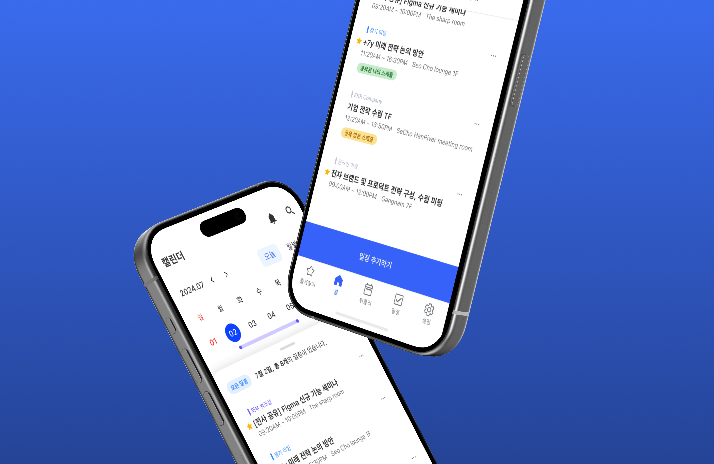
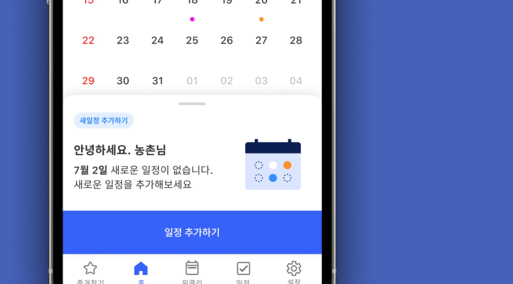

Confidential
Concept Design
·
UI/UX Design
GAIA Works : Team Collaboration Tool
From PC to Tablet and Mobile UI/UX and Function Flow, Whole Feature Theme Concept, Project Lead
2024.01 - 2024.05
GAIA Works is a type of team collaboration tool which can be used from PC to Mobile and Tablet.
It contains a wide range of function items such as calendar, mail, messenger, group tree, video call etc. Plus, I've been in charge of making project concepts,
improving user-centered UX, feature owner of calendar, talk messenger, admin(only web), advanced concept items etc.
Additionally, I have experienced entire processes from creating a design system for each different display to development implementation and project leading.

The case of display applied
A Unified and harmonious design that can be applied to various screens


This project result is not matched with original version, because it is not public open yet. It is designed only for portfolio including personal ideas and concpets.